Table of contents
Product description
xPertManager is an integrated management platform that streamlines how organizations operate. Among other things, it provides:
- management of human, material and financial resources
- project management: design, planning/scheduling, monitoring and organization of activities
- event management: creation, planning and sharing
- communication management: audio calls, text messages, instant messaging, video conferencing
- organization of electronic votes
- organization tools (dashboard with Eisenhower matrix, sticky notes, reminders, etc.)
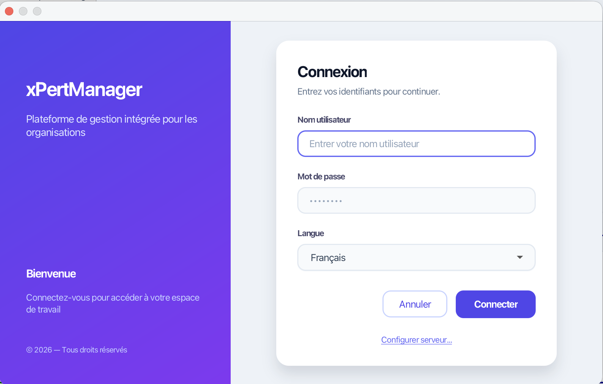
When the application starts, the user can choose the working language: French or English (support for other languages is planned for future versions).
The client interface has five tabs:
General tab
General configuration interface for the organization:
- creation of structures and sub-structures
- creation of agents and their assignment to structures
- creation and assignment of material resources
- communication between agents
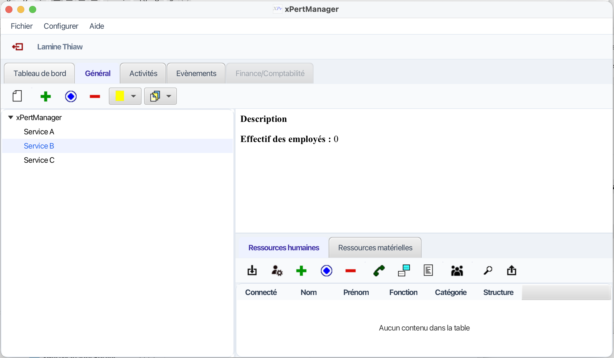
Dashboard tab
Helps users organize themselves better and see the priority of their pending tasks.
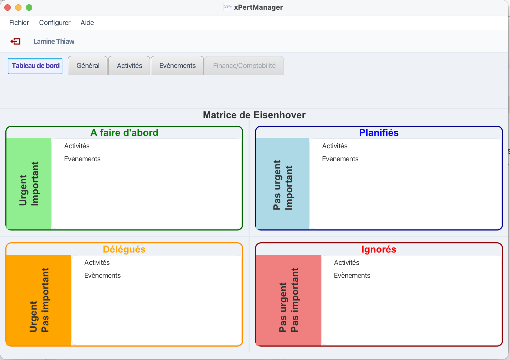
Activities tab
- creating projects or activities
- sharing and processing projects or activities
- monitoring projects or activities
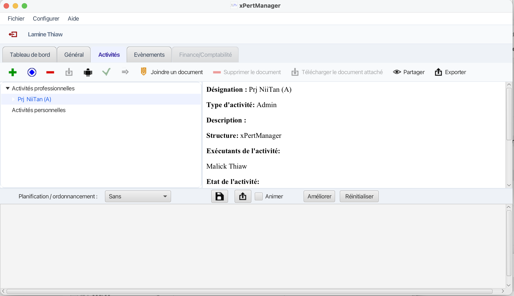
Event tab
- creating events
- monitoring events
- launching events such as video conferences held on the platform
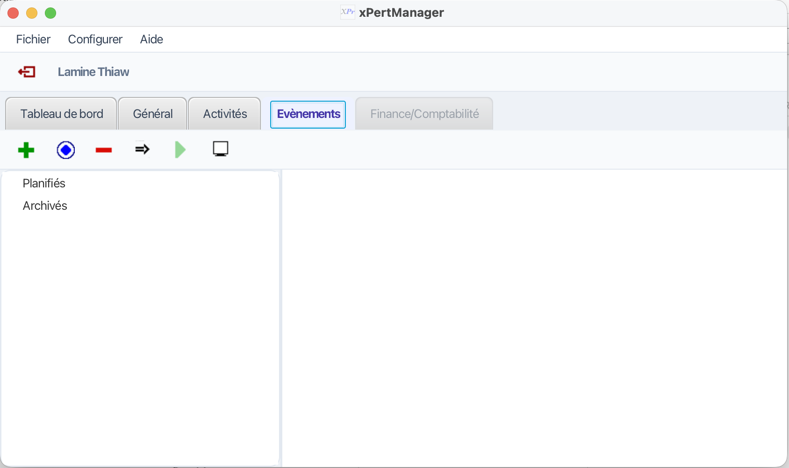
Finance/Accounting tab
Opens the Finance and accounting hub, organized into three groups of modules, each opening in its own window:
- Sales and purchasing: Customers, Suppliers, Orders, Invoices
- Catalog and stock: Products, Stock
- Finance and payroll: Treasury, Bank reconciliation, Payroll settlement
 ↑ Back to top
↑ Back to top
Creating and organizing structures
Create a structure
- After launching the application, choose the working language and click the Cancel button.
- In the General tab, click the button.
- In the dialog box that appears, enter the name of the structure and the name of its associated database. Also define the staff categories and activity types by clicking the corresponding buttons. You can also fill in the structure description field.
- Then click the Create button.
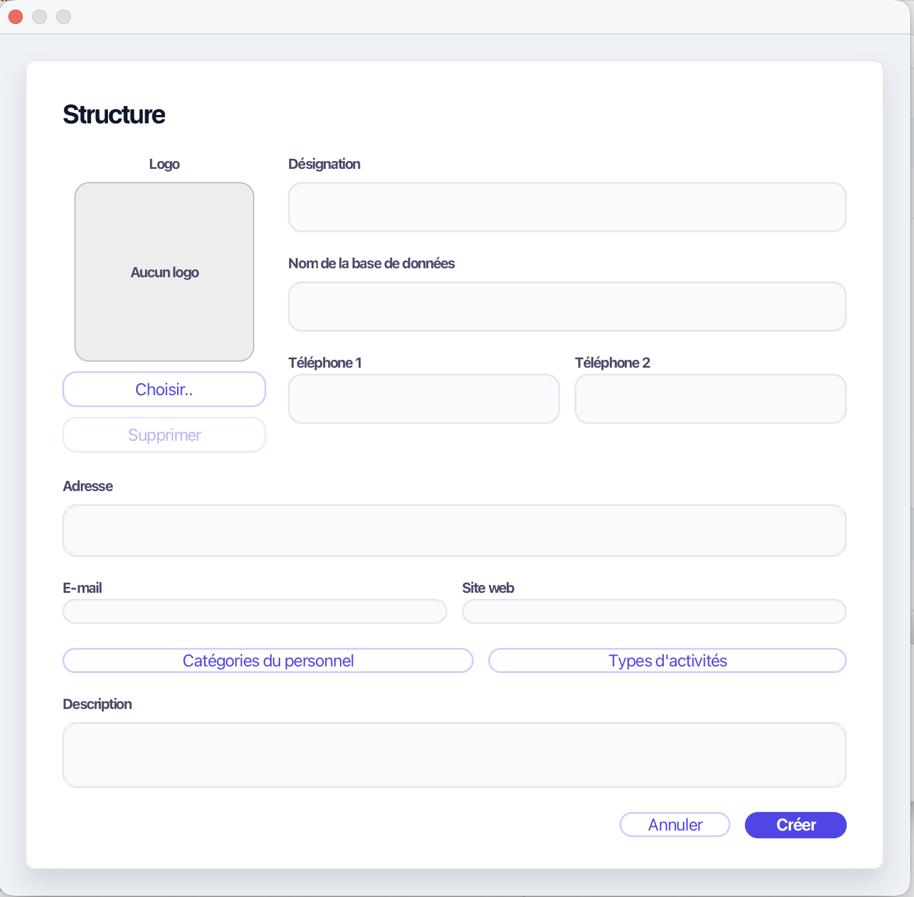
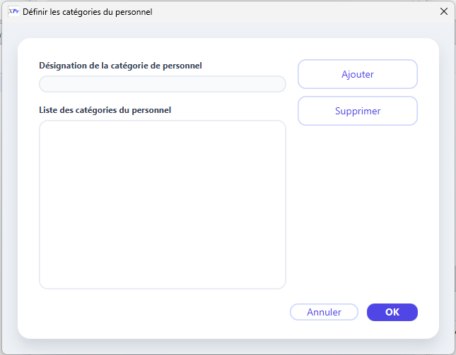
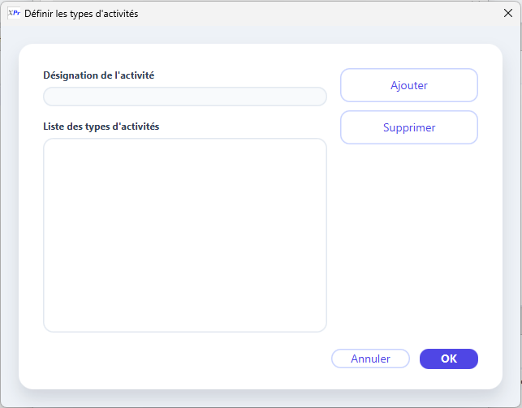
Add a sub-structure
To add a sub-structure to an existing structure:
- Select the parent structure.
- Click the button in the General tab.
- In the dialog box, enter the required data. Selecting the manager of the new structure is optional and can be done later.
- Click the Create button.
- You can continue creating other structures or close the dialog box.
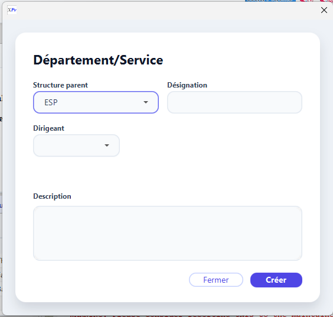
Edit / Delete a structure
- To edit a structure, select it and click in the General tab.
- To delete a structure, select it and click in the General tab.
Managing staff
Add an agent
To add an agent to a structure:
- Select the structure in the General tab.
- In the Human Resources tab, click .
- In the dialog box, enter the required data.
- Click Insert.
- You can continue adding other agents or close the dialog box.
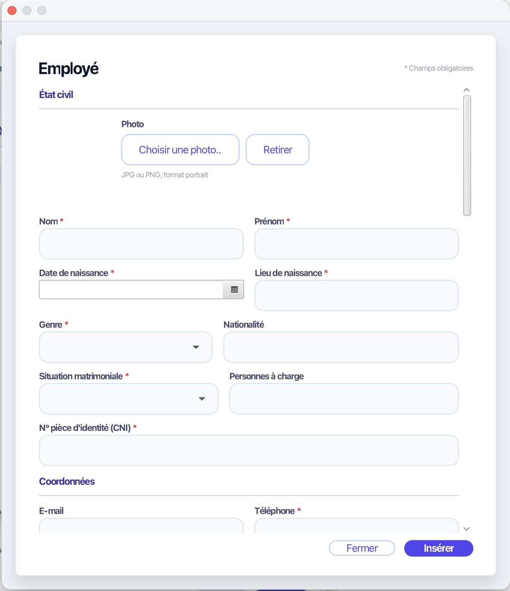
Edit / Delete an agent
- To edit an agent, select them and click in the Human Resources tab.
- To delete an agent, select them and click in the Human Resources tab.
Leave
Leave management covers two uses: self-service, where each agent submits and tracks their own requests, and HR processing, grouped in the Human resources management module.
Open the Human resources management module
From the General tab, select the Human Resources tab at the bottom of the interface and click . The module opens in its own window, organized into three groups: Staff (Agent directory), Leave (Leave requests, Leave balances, Leave types) and Payroll (Payslips, Payslip template).
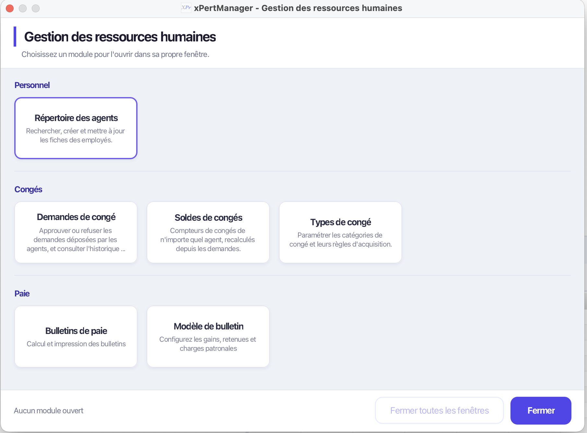
Submit a leave request (agent)
- From the main menu, open My leave requests. At the top of the screen, Days remaining shows the available balance.
- Click New request, enter the leave type and dates, then confirm.
- The request appears in the table (Type, Period, Days, Status, Submitted on, Decided on, Decision), where you can follow its progress.
- Filter by Fiscal year or Status, or search for a specific request. Select a row and click Open for details.
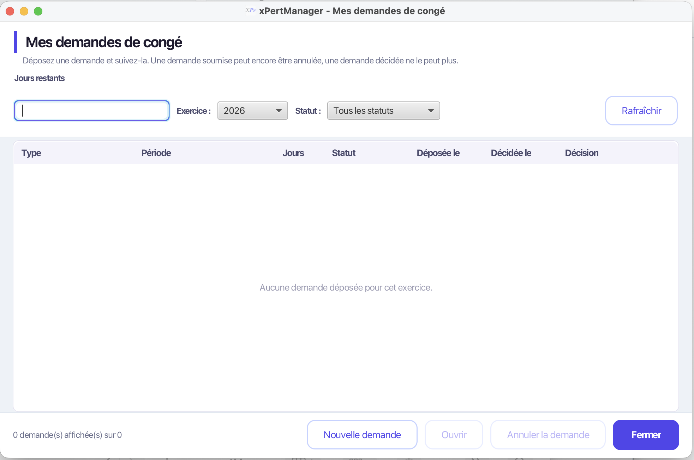
Approve or reject a request (HR manager)
- In Human resources management, open the Leave requests card.
- Filter by structure, agent, fiscal year or status if needed, then switch between the Awaiting decision and History tabs.
- Select a pending request (Agent, Type, Period, Days, Submitted on, Reason) and click Approve or Reject.
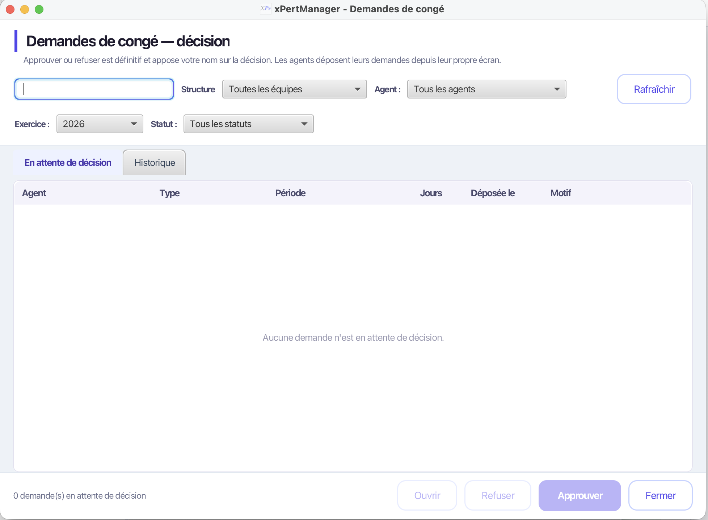
View leave balances
The Leave balances card shows, for any agent, the leave counters automatically recalculated from requests that have already been approved.
Configure leave types
The Leave types card lets you set up the available leave categories (annual leave, sick leave, etc.) and their accrual rules.
↑ Back to topPayslips
Each agent views their own payslips on a self-service basis; generating them is reserved for HR and finance/accounting managers.
View your payslips (agent)
- From the main menu, open My payslips: the screen shows your name and the number of available payslips.
- Filter the list by year or status, then click Refresh.
- Select a payslip in the list (period, issue date, gross salary, total deductions, net pay, status): its preview appears in the right-hand panel.
- Use Print or Export PDF to keep a copy.
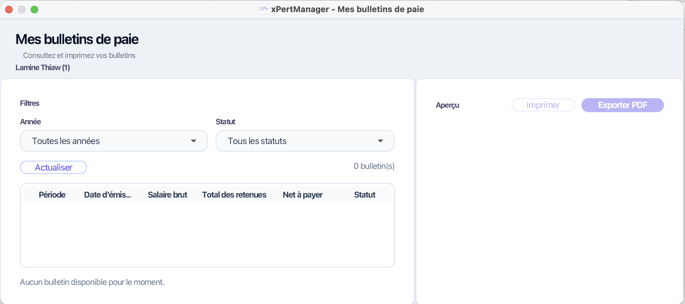
Generate a payslip (HR manager)
In Human resources management (Payroll group), the Payslips card — “Payslip calculation and printing” — opens the Payslip screen (“Payslip entry and preview”).
- Choose the team and then the agent concerned, as well as the payroll month and year — or reuse an existing payslip with Load from... — then enter the issue and payment dates.
- Under Earnings, enter the base salary; bonuses and other earnings items are added in the detailed list to obtain the gross salary.
- Under Deductions, itemize contributions and other deductions: their sum makes up the total deductions.
- The Results and employer cost section gives the net salary as well as the total cost to the employer.
- Once the entries have been checked, save the payslip; it can then be printed or exported to PDF.
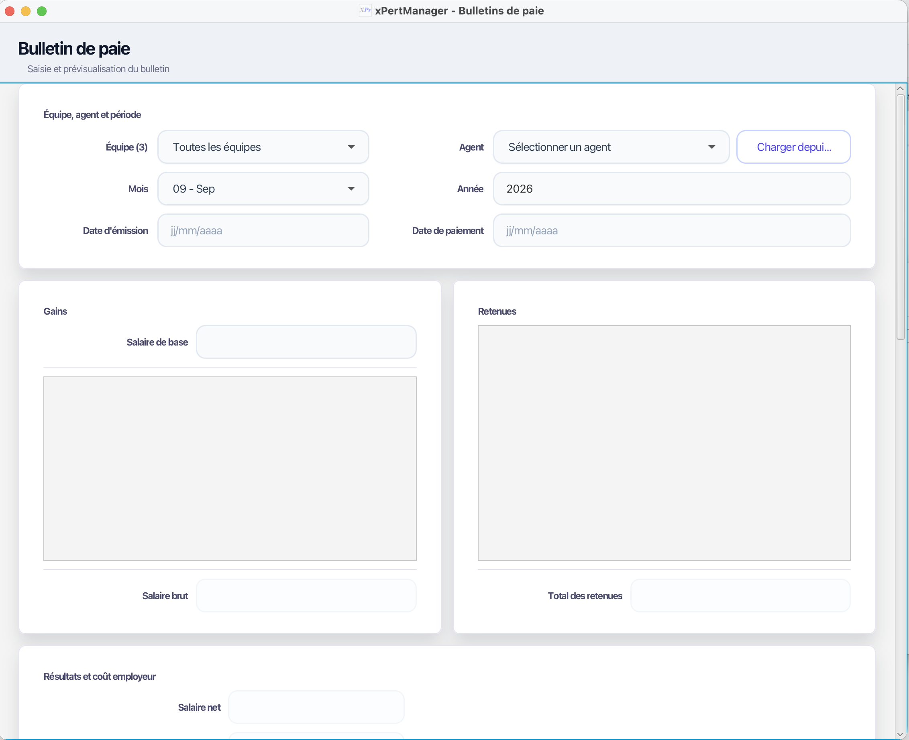
Configure the payroll template (HR manager)
The Payslip template card — “Configure earnings, deductions and employer charges” — defines the items offered when generating a new payslip (see the overview of the Human resources management module above).
Settlement of an already validated payslip is handled in the Finance & Accounting module, via the Payroll settlement card.
↑ Back to topCreating and managing projects or activities
Create a project or activity
- In the General tab, select the structure in which the project or activity is to be created.
- In the Activities tab, select the parent project or activity. If there is none, select the type (professional or personal).
- Click .
- In the dialog box, fill in the required data. If activity types have not been defined, they must be set up by editing the parent structure.
- Click Insert.
- You can continue creating other projects or close the dialog box.
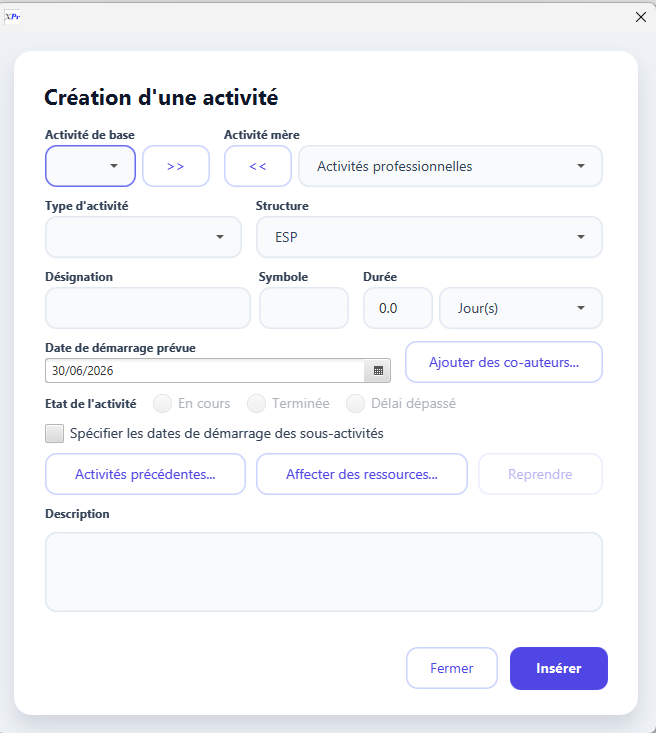
Edit / Delete
- To edit a project, select it and click in the Activities tab.
- To delete a project, select it and click in the Activities tab.
Manage a project or activity
- Add involved agents: Click to choose the participating staff.
- Attach a document: Click to attach a file to the project.
- Publish a project: Click
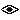
to make it available to collaborators. - Mark as completed: Click once finished.
- Define dependencies: Use the “Previous activities” option.
- Assign resources: Use the “Assign resources” option to allocate material or human resources.
- Visualization: Display as a Gantt or MPM chart, animate progress in real time with the Animate checkbox (activities are automatically colored according to their progress: normal, critical, completed, not yet started) and export the charts.
Creating and organizing events
Create an event
- Select the Event tab.
- Click the button.
- In the dialog box, enter the required information. Add the agents involved so that they can see the event in their interface. To add a participant, click , then in the Human Resources tab, select the participant and click .
- Add more participants by repeating the procedure, or load an existing distribution group .
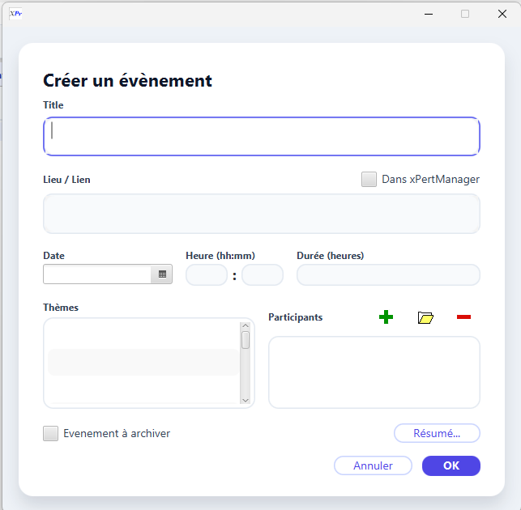
Edit / Delete an event
- To edit an event, select it and click .
- To delete an event, select it and click .
Organizing a video conference
Instant video conference
- In the Events tab, click .
- In the video conference window, add participants by clicking .
Scheduled video conference
- Select the event in the Events tab and click .
- Connected participants will automatically receive an invitation to join the meeting.
In the video conference window, the available buttons are:
- Invite a participant — select them in the staff list, then click in the Human resources tab.
- Invite a distribution group — load the group file from its location.
- Turn the microphone on/off.
- Turn the camera on/off.
- Turn screen sharing on/off.
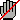
Join/leave the speakers' list to take the floor.- Turn meeting-notes editing mode on/off — notes are displayed in real time to all participants. Only one participant can edit at a time.
- Start an electronic vote — all participants can vote and see the results.
- >> Send a text message to all participants.
- Leave the video conference.
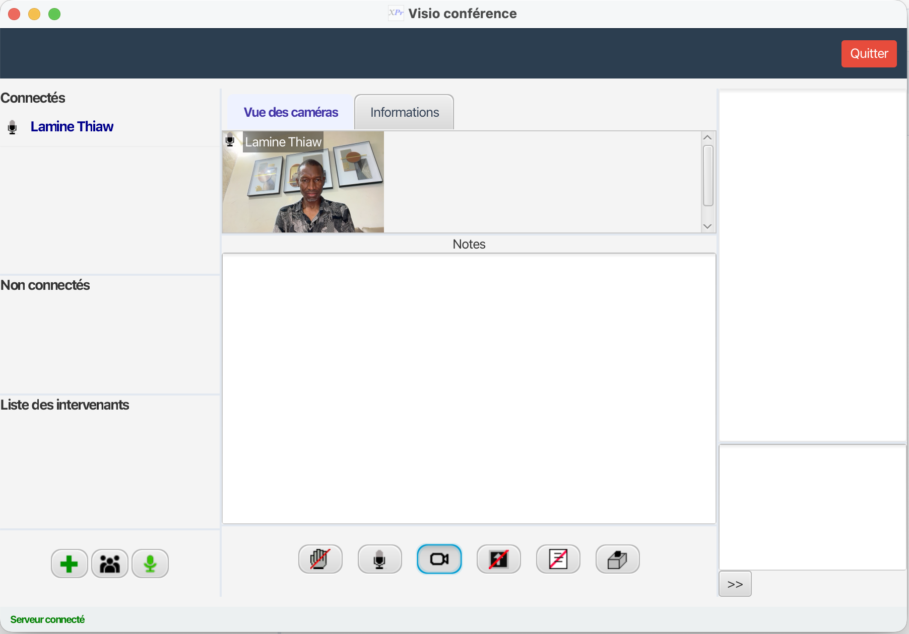
↑ Back to topManaging material resources
Add a material resource
- Select the General tab.
- Select the structure to which the material resource will be assigned.
- Select the Material Resources tab at the bottom of the interface.
- Click the button.
- In the dialog box, fill in the required information and define categories if needed.
- Click Add.
- You can continue adding other resources or close the dialog box.
Edit / Delete a material resource
- To edit, select the resource in the Material Resources tab and click .
- To delete, select the resource and click .
Schedule a material resource
Material resources are scheduled in the Manage a project or activity section.
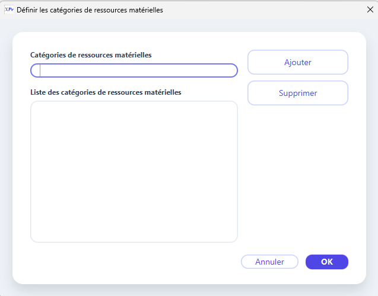
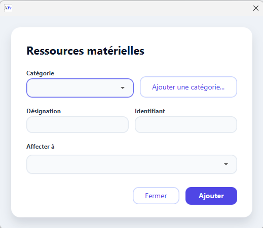
Finance & Accounting
The Finance and accounting hub, opened from the Finance/Accounting tab, groups the modules into three families: Sales and purchasing (Customers, Suppliers, Orders, Invoices), Catalog and stock (Products, Stock) and Finance and payroll (Treasury, Bank reconciliation, Payroll settlement). Each card opens its module in its own window.
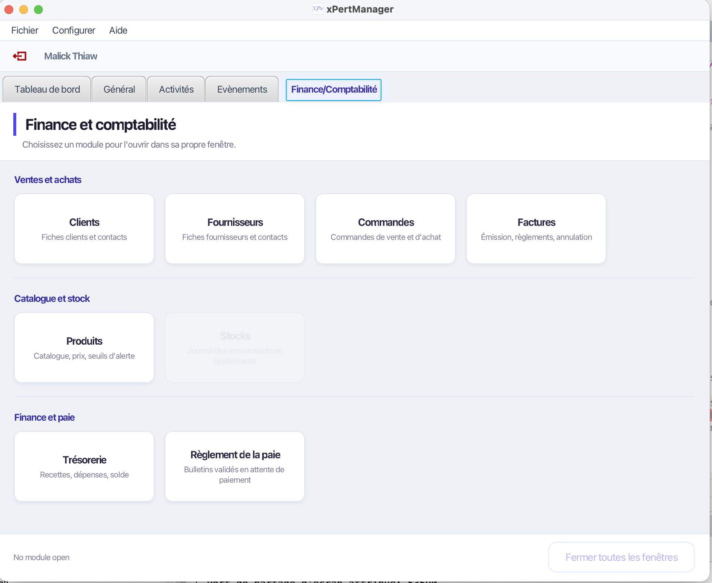
Manage customers and suppliers
- Open the Customers card (“Customer records and contacts”) or the Suppliers card (“Supplier records and contacts”).
- Click New customer (or New supplier) and enter the code, the name or company name, the customer type where applicable, the phone number, email, address and active status.
- Click Save.
- Search or filter by type, or tick Active only.
- Select an existing record to edit it or Delete it; Clear empties the form.
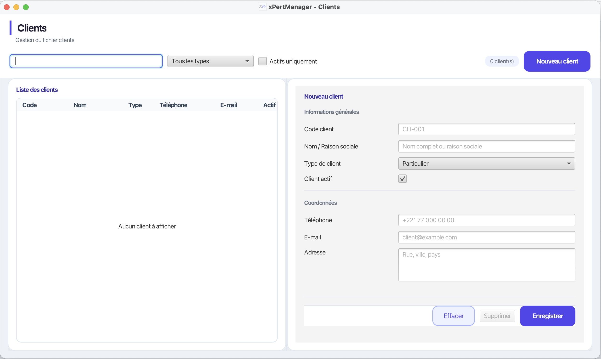
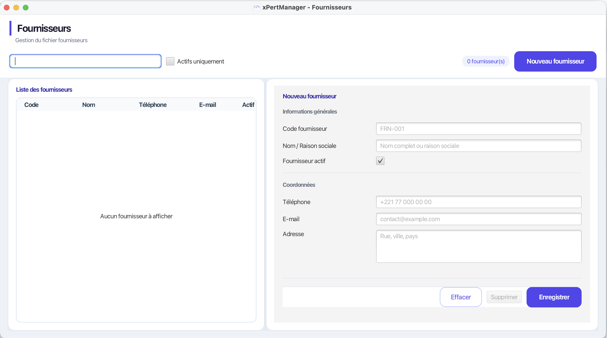
Track orders and invoices
The Orders card (“Sales and purchase orders”) lists the orders placed with customers and suppliers:
- Create a New sales order or a New purchase order, and filter by type or status.
- Select an order to Open, Confirm, Mark as delivered or Cancel it.
- Once the order is confirmed, Generate invoice creates the corresponding invoice.
The Invoices card (“Issuing, payments, cancellation”) then lets you track each invoice:
- The invoice details (number, type, linked order, invoice and due dates, status) and its amounts (excl. tax, VAT, incl. tax, paid, balance due) are shown in the right-hand panel.
- Enter a Payment amount and click Record payment; an invoice can also be cancelled with Cancel invoice.
- Use Export to PDF or Print to get the document.
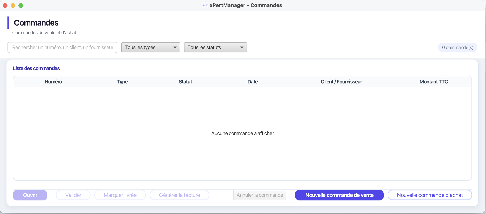
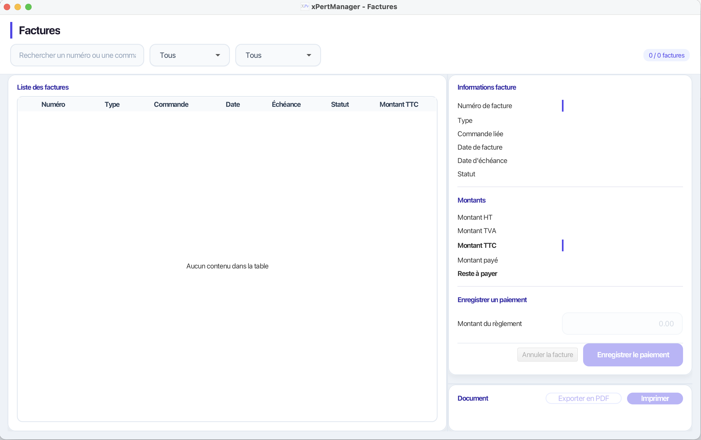
Manage the product catalog and stock
- Open the Products card (“Catalog, prices, alert thresholds”) and click New product.
- Enter the purchase and selling prices excluding tax, as well as the tax rate: the selling price including tax and the margin are calculated automatically.
- Enter the quantity in stock and the alert threshold; a low stock badge appears automatically when the threshold is reached.
- Click Save.
The log of stock receipts and issues is available in the Stock card (“Movement and adjustment log”).
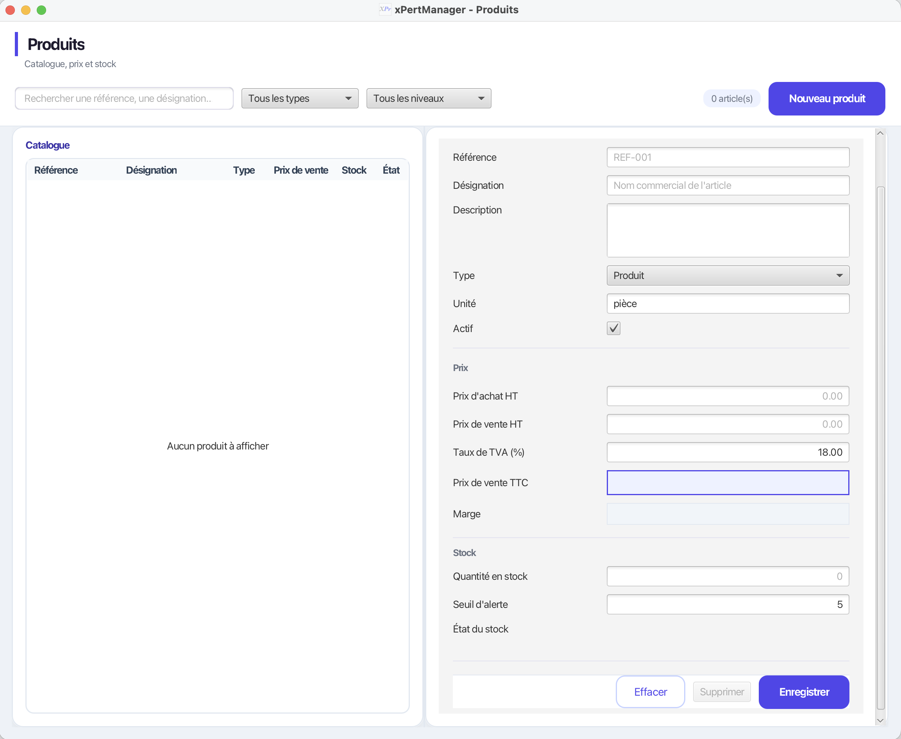
Record an expense or income
- Open the Treasury card and click New entry.
- Choose the type (expense or income), a category, a description, an amount and, if needed, a note.
- Confirm: the entry appears in the table and is immediately reflected in the indicators and charts.
Expense categories: rent, electricity, water, telecoms, supplies, transport, insurance, maintenance, taxes and duties, salaries, purchases, other. Income categories: sales, grants, interest, refunds, other.
- An existing entry can be edited or deleted from the table.
- Generate report exports the displayed period.
Monitor treasury
- Choose the period to analyze (start month and year, end month and year), then click Refresh.
- The key indicators — Total income, Total expenses, Balance, Margin rate — are updated at the top of the screen.
- The Monthly treasury trend chart traces income and expenses month by month; the Expense breakdown and Income breakdown pie charts break each down by category, with a Breakdown by category table (Category, Type, Amount) below.
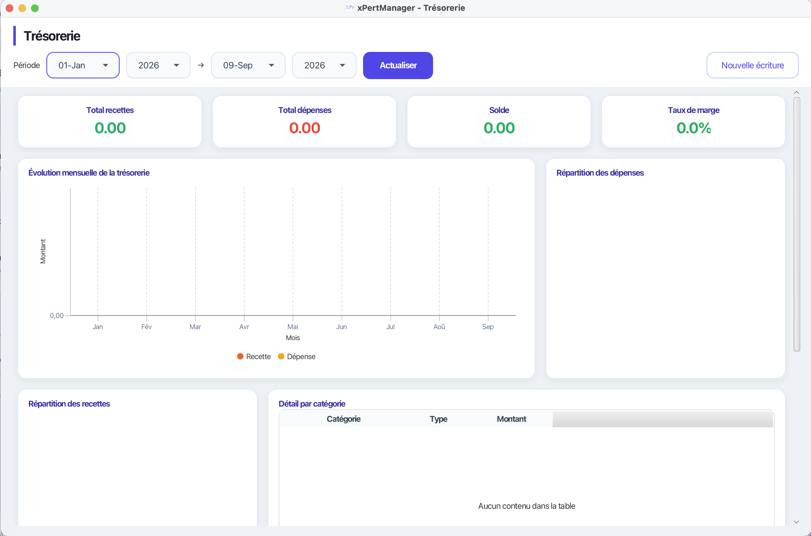
Reconcile the bank statement (TOP Manager / finance manager / assistant)
The Bank reconciliation card compares, line by line, the statement sent by the bank with the treasury entries already recorded in the application, to check that they match.
- Open the Bank reconciliation card, choose the period to process (start date, end date), then click Refresh.
- The left-hand table shows the bank statement lines (date, description, amount, status); the right-hand table shows the treasury entries for the same period.
- If a statement line does not yet exist in the application, click Add and enter its date, description and amount.
- Select a statement line and its matching treasury entry, then click Reconcile: the line changes to Reconciled status.
- If a match was made in error, select the reconciled line and click Undo reconciliation.
Access to this module is restricted to the TOP Manager, the finance manager and their assistant.
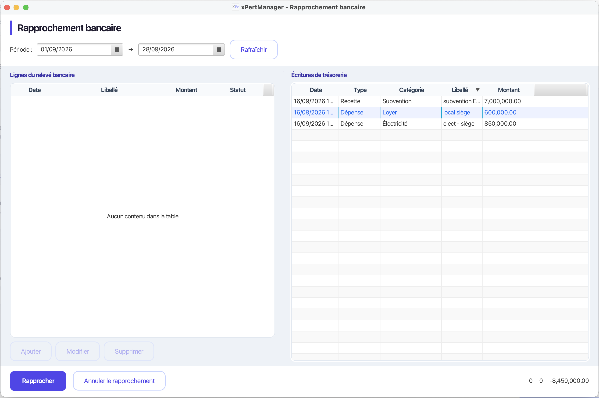
Settle a payslip (finance/accounting manager)
The Payroll settlement card (“Validated payslips awaiting payment”) lists the payslips already validated by the HR manager and lets you record their settlement (payment method, status, remarks) — see also the Payslips section.
↑ Back to topAudio calls, text messages and instant messaging
Make an audio call
- Select the General tab.
- Select the Human Resources tab at the bottom of the interface.
- Select the agent you want to call (they must be online).
- Click the button.
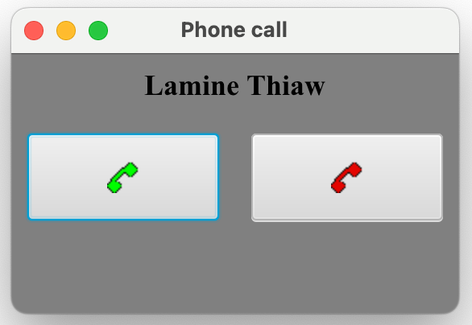
Send a text message
- Select the General tab.
- Select the Human Resources tab at the bottom of the interface.
- Select the recipient agent (even if they are offline).
- Click the button.
- Write the message and click Send. If the recipient is online, they will see it immediately; otherwise, they will see it when they next log in. You can also send a message to a group of recipients .
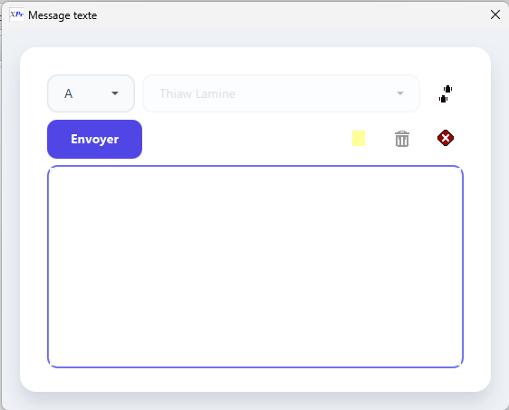
Start an instant messaging chat
- Select the General tab.
- Select the Human Resources tab at the bottom of the interface.
- Select the agent you want to chat with (they must be online).
- Click the
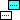
button.
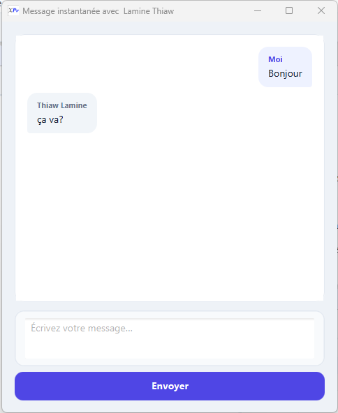
↑ Back to topElectronic voting
Electronic voting is built into an event. It can be scheduled or held instantly. To organize an electronic vote:
- Launch the associated event.
- Click the button.
- Enter the vote title in the dialog box that appears and click OK.
- Create and add the voting options.
- Specify the closing time of the vote.
- Click Start to open the vote. The options will appear in all participants' interfaces so that they can vote.
- At the end of the vote, click Stop. The results will appear in all participants' interfaces.
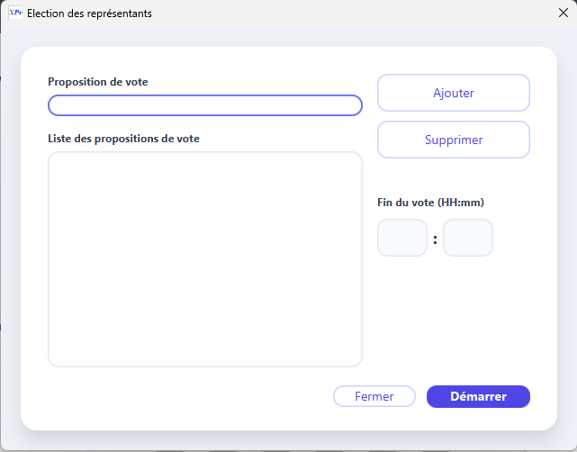
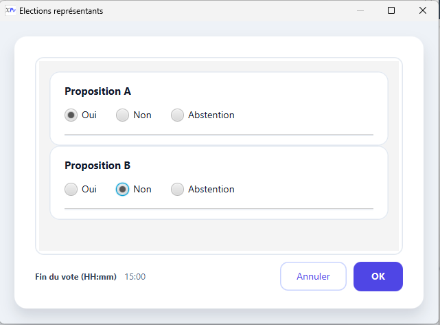
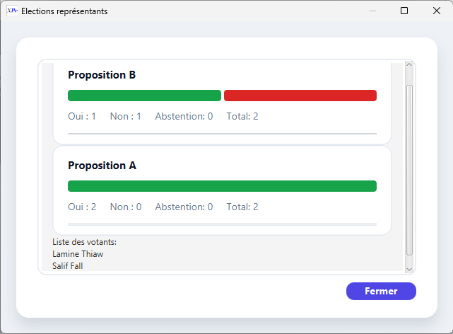
Miscellaneous: Eisenhower matrix, sticky notes, distribution groups
Eisenhower matrix
The Eisenhower matrix is built into the dashboard. It gives the user a clear view of:
- Important and urgent tasks — do immediately
- Important but not urgent tasks — schedule
- Not important but urgent tasks — delegate
- Not important and not urgent tasks — can be ignored
Activities or events created or received are automatically placed in the matrix — in the Important and urgent tasks area if the deadline is close, otherwise in Important but not urgent tasks. The user can reassign priorities from the Activities and Events tabs by selecting an item and clicking .
Create sticky notes
- In the General tab, click the button and choose Edit....
- In the dialog box, click Add to create a sticky note.
- You can continue creating other notes or close the dialog box.
Display sticky notes
- Click the button and choose Show/Hide.
- The notes will appear and scroll one after another.
- To close the window, click in the window, or click and then Show/Hide.
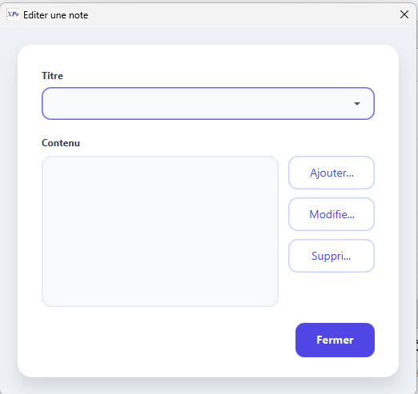
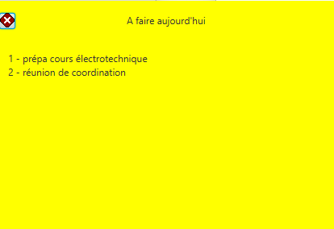
Create distribution groups
- Select the General tab.
- Select the Human Resources tab at the bottom of the interface.
- Click the button.
- In the dialog box, enter the group name and add members.
- Save the group to a file for future use.
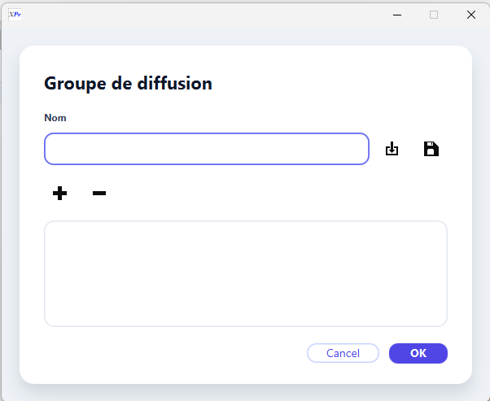
↑ Back to topAuthor
September 2026